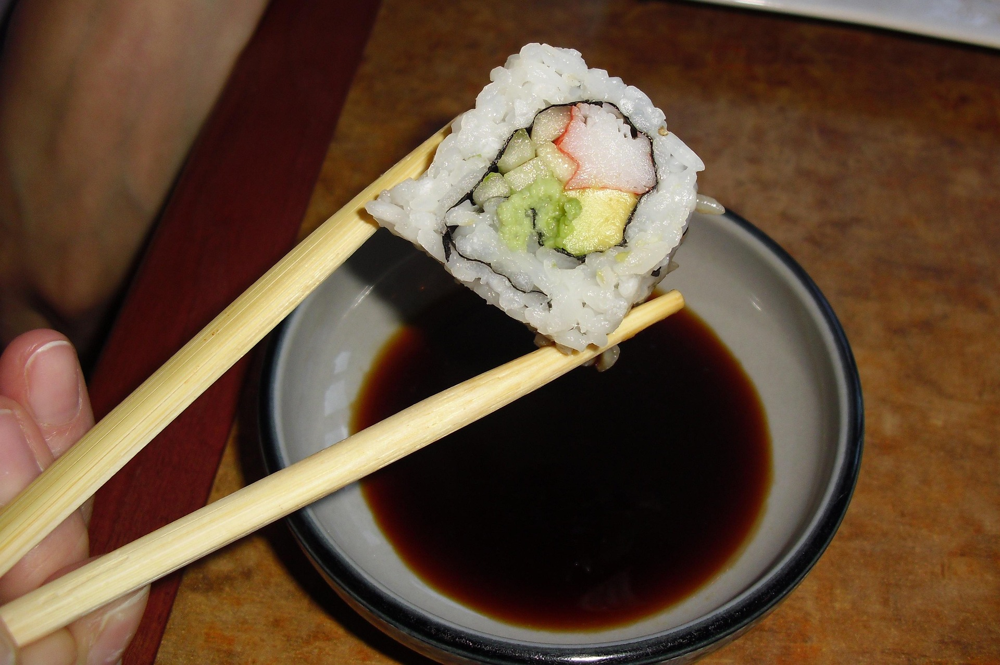

Back
Spicy Sushi Dipping Sauce

Description
This sushi dip is an excellent alternative to boring, bland soy sauce. This 5-minute recipe will surely add a kick to your sushi and sashimi! While best served with sushi or sashimi, it is also great for dumplings and wontons.
Ingredients
- 2 tablespoons soy sauce
- ½ teaspoon chile-garlic sauce (such as Sriracha)
- ¼ teaspoon sesame oil
- 1 pinch garlic powder
- 1 thin slice lemon
Directions
- Gather all ingredients.
- Stir together soy sauce, chile-garlic sauce, sesame oil, and garlic powder in a small bowl; add lemon slice.
- Serve and enjoy!
Nutrition Facts (per serving)
- Calories 17
- Fat 1g
- Carbs 2g
- Protein 1g